Introduction
As Battery Energy Storage Systems (BESS) become the backbone of modern renewable energy integration and grid stability, safety considerations have moved from an afterthought to a fundamental design imperative. The global energy storage industry has witnessed a series of high-profile incidents — from the 2019 Arizona Public Service (APS) McMicken BESS explosion that seriously injured firefighters, to the 2025 Thurrock BESS fire in Essex, England — that have collectively forced regulators, engineers, and project developers to confront a hazard that conventional fire protection strategies fail to adequately address: deflagration.
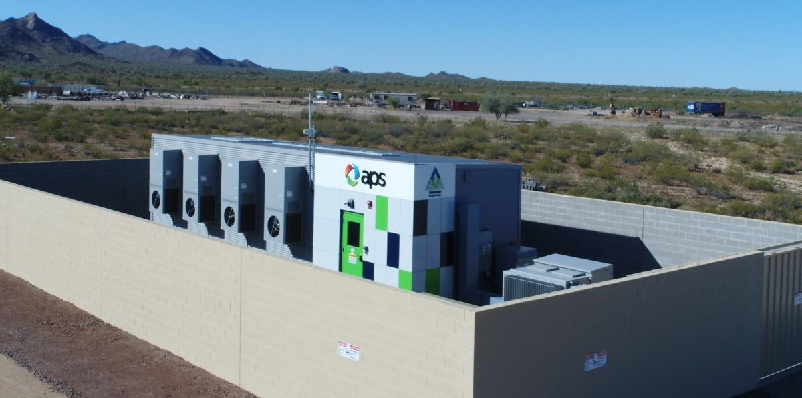
While thermal runaway has received the lion's share of safety discussions, the secondary hazard of internal gas-phase explosion — or deflagration — often poses the greatest risk to structural integrity, adjacent equipment, first responders, and human life. Deflagration panels, commonly referred to as explosion vent panels or explosion relief vents, are emerging as one of the most critical — and still least understood — passive safety technologies in BESS design.
This article provides a comprehensive technical overview of deflagration panels: what they are, why they matter, how they work, how they are designed and sized, and what standards govern their deployment — including India's evolving regulatory landscape.
Understanding Deflagration in BESS: The Hidden Hazard
From Thermal Runaway to Deflagration
Thermal runaway is the initiating event in most BESS fire and explosion scenarios. When a lithium-ion cell undergoes thermal runaway — triggered by overcharging, external heat, manufacturing defects, or mechanical damage — it undergoes rapid exothermic decomposition, with internal temperatures potentially exceeding 1,000°C. During this process, the cell vents a toxic and highly flammable mixture of gases, primarily:
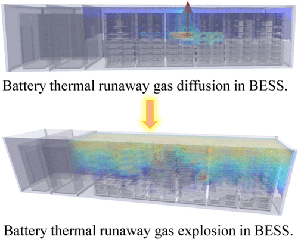
- Hydrogen (H₂) — the most reactive component with a wide flammability range (4–75% by volume in air)
- Carbon monoxide (CO) — toxic and flammable
- Light hydrocarbons — including methane, ethylene, and propylene
In the confined volume of a BESS container or enclosure, these gases can rapidly accumulate to concentrations well above their Lower Flammable Limit (LFL). Unlike an open environment where gases disperse harmlessly, a containerized BESS provides the perfect conditions for dangerous gas accumulation. When a single ignition source is present — a spark from electrical switchgear, a hot surface, or static discharge — the accumulated gas cloud can ignite and propagate as a deflagration: a fast-moving combustion wave traveling at subsonic speed but generating extreme pressure surges.
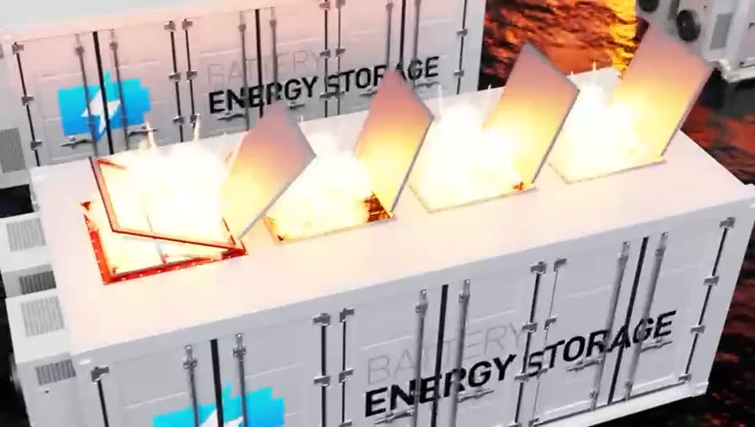
Deflagration vs. Detonation: A Critical Distinction
It is important to understand that deflagration is distinct from detonation. In a deflagration, the combustion front moves through the fuel–air mixture at speeds below the speed of sound (typically 1–100 m/s), generating overpressures that can range from a few kPa to several bar. In a detonation, the combustion front transitions to a supersonic shockwave, generating far more destructive pressures. For BESS applications, the primary concern is deflagration — but even this subsonic explosion event can be catastrophic if the enclosure is not designed to handle the resulting overpressure.
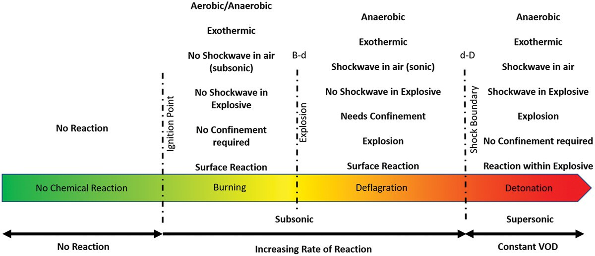
A deflagration pressure wave can rupture enclosure walls, eject heavy structural panels as projectiles, and generate fireballs — all of which pose severe risks to nearby personnel and adjacent installations. Early BESS incidents clearly demonstrated this: in the APS McMicken incident, firefighters opened a container door without knowledge of accumulated gases, causing a powerful deflagration that caused severe injuries. The absence of deflagration panels was cited as a significant factor in the severity of that incident.
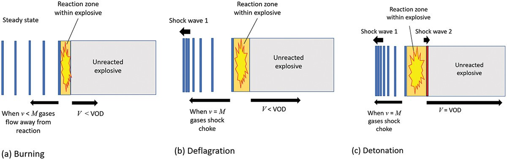
The Role of Internal Obstructions
A particularly challenging aspect of deflagration in BESS enclosures is the effect of internal obstructions. Battery racks, cable trays, bus bars, and thermal management components create a congested internal environment. As the flame front propagates through these obstructions, it accelerates due to turbulence — a phenomenon known as Deflagration-to-Detonation Transition (DDT) risk enhancement. This congestion effect can increase internal pressures well beyond what simplified prescriptive calculations predict, making CFD-based analysis essential for complex enclosure geometries.
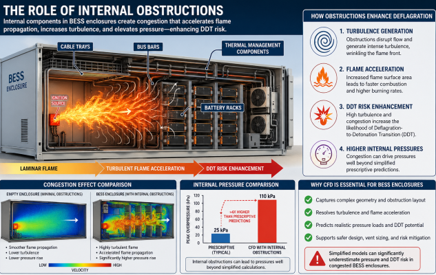
What Are Deflagration Panels?
Definition and Core Function
Deflagration panels — also called explosion vent panels, explosion relief vents, or blast vents — are engineered safety devices designed to open rapidly at a pre-determined internal pressure to relieve the overpressure caused by a gas-phase explosion inside an enclosure. Their core function is not to prevent the explosion from occurring, but to control the explosion's consequences: by providing a controlled, engineered outlet for the expanding combustion gases and pressure wave, they prevent the enclosure from suffering catastrophic structural failure or uncontrolled fragmentation.
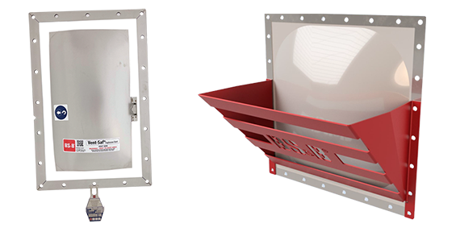
"The purpose of a deflagration vent panel is not to avoid an explosion. It is designed to control the pressure wave in case of an explosion with a predetermined relief area and opening pressure." — Vigilex Energy BESS Safety Report
When an internal deflagration occurs, the rapidly rising pressure acts on the vent panel. At the designated burst pressure (Pstat), the panel opens instantly — typically within 200 milliseconds — releasing the combustion products, pressure wave, and flame in a controlled direction, typically upward through the roof of the container. This controlled release prevents the internal pressure from reaching the enclosure's structural failure pressure (Pes), thereby maintaining the integrity of walls, roof panels, and access doors that might otherwise become lethal projectiles.
Design Philosophy: Accepting Ignition, Controlling the Outcome
Deflagration venting represents an engineering philosophy of acceptance and control rather than prevention. It acknowledges that despite best efforts — gas detection, ventilation, suppression systems — an ignition event may still occur. The deflagration panel is the last line of passive defense: if all other systems fail, the vent panel ensures the explosion remains survivable.
This is fundamentally different from the explosion prevention approach (governed by NFPA 69), which aims to maintain gas concentrations below 25% of the LFL at all times through active dilution, ventilation, or inerting systems. Both approaches are recognized by NFPA 855, and many high-risk installations deploy both in combination for multi-layered protection.
Types of Deflagration Panels
Deflagration panels used in BESS applications are available in several configurations, each suited to specific installation requirements:
1. Flat Profile Explosion Vent Panels (e.g., VSP-L™)
The most widely used configuration for BESS rooftop installation. These are flat, low-profile panels with cross-rib bracing for structural support. Typically constructed from stainless steel (SS 304 or SS 316), they are designed for non-fragmentation — critical for personnel safety, as panel fragments during activation would create secondary projectile hazards. Available in a wide range of sizes and burst pressures, often starting from as low as 0.33 psi (22 mBar).
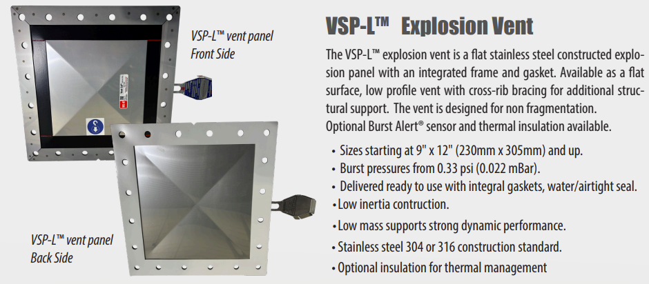
2. Breathable Explosion Vent Panels
A specialized variant featuring a gas-permeable PTFE membrane seal that allows the enclosure to "breathe" — equalizing minor pressure fluctuations from thermal cycling or humidity changes without activating the vent — while still opening rapidly during a true deflagration event. This reduces false activations and eliminates the need for frequent panel replacement due to pressure fatigue.
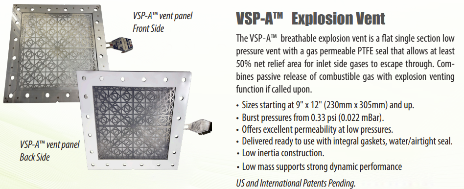
3. Explosion Vent with Integral Flame Arrester (e.g., BESS-Saf™)
An advanced configuration that combines the explosion vent panel with an integrated flame arrester in a single housing. The flame arrester prevents the external fireball from propagating back into the enclosure or igniting adjacent equipment and structures, providing an additional layer of protection in densely packed BESS sites.
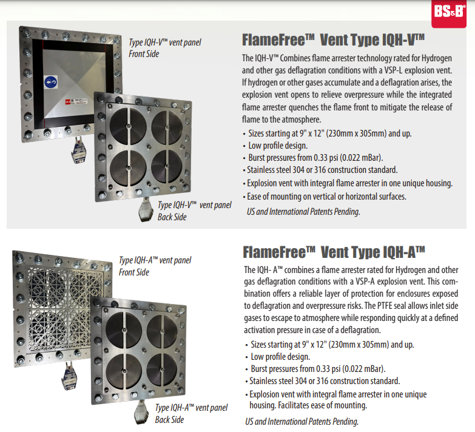
4. ARC-VENT / Wall-Mounted Blast Panels
Designed for installation in external walls of BESS containers and electrical switch rooms. These panels relieve overpressure caused not only by gas explosions but also by arc flash events — a particularly important consideration for the electrical compartments within BESS containers. They are certified to open at required pressures and are typically installed on the roof but can be wall-mounted where roof space is constrained.
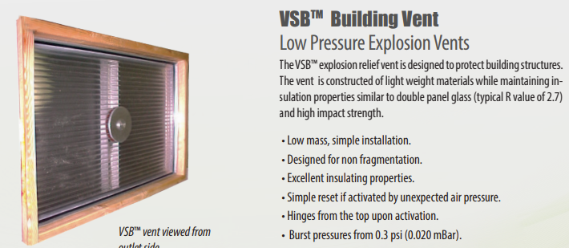
5. Insulated Deflagration Panels
In climates with extreme temperature variations — such as desert environments common in large-scale Solar+BESS projects in India, the Middle East, or Australia — standard vent panels may compromise the thermal management of the enclosure. Insulated variants incorporate thermal insulation layers while maintaining IP66 ingress protection ratings, preventing moisture and dust ingress while preserving enclosure thermal integrity.
The Physics of Deflagration Venting
Key Engineering Parameters
Designing an effective deflagration venting system requires precise calculation of multiple interrelated parameters:
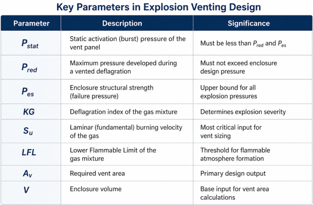
The Burning Velocity Challenge
Research has identified the laminar burning velocity (Su) of the vented gas as the single most critical parameter in determining the feasibility of deflagration vent designs for BESS. This is where battery chemistry becomes a fundamental safety variable:
- Lithium Iron Phosphate (LFP) batteries generate thermal runaway gases with higher hydrogen concentrations (often >30%), resulting in higher burning velocities and more challenging vent sizing calculations
- NMC (Nickel Manganese Cobalt) batteries may generate gas mixtures with lower hydrogen concentrations and higher CO₂ content, which acts as a natural suppressant, leading to lower burning velocities and more feasible vent designs
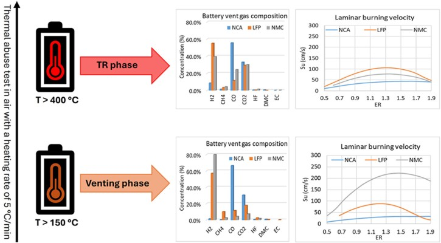
Research has shown that gas mixtures with more than approximately 30% hydrogen content and low CO₂ concentrations can lead to non-feasible deflagration vent designs under prescriptive NFPA 68 calculations — meaning the required vent area exceeds what is practically achievable given the container's roof dimensions. In such cases, a combination of explosion prevention (NFPA 69) and partial volume deflagration (PVD) analysis becomes necessary.
Partial Volume Deflagration (PVD) Analysis
A critical advancement in BESS explosion safety engineering is the Partial Volume Deflagration (PVD) methodology. Unlike traditional vent sizing, which conservatively assumes the entire enclosure volume is filled with a uniform flammable gas mixture, PVD analysis models the realistic scenario: gas from thermal runaway is released locally from one or a few battery modules, creating a localized gas cloud that occupies only a fraction of the total enclosure volume.
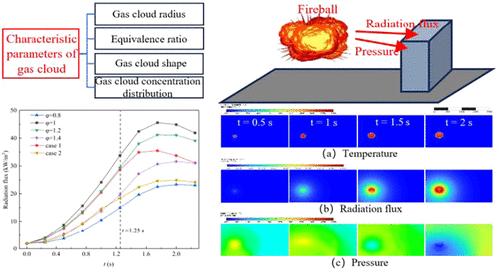
PVD analysis, performed by firms such as REMBE® using their VENT.iNG software calibrated to NFPA 68 or EN 14994, produces more realistic — and often more favorable — vent sizing results by accounting for:
- The maximum credible gas release volume from a single module failure event
- The gas reactivity characteristics specific to the battery chemistry
- The internal geometry and obstruction level of the enclosure
- The distribution of ignition sources
This methodology allows engineers to design optimally-sized deflagration venting systems that are both technically effective and practically installable on standard 20-ft or 40-ft BESS containers.
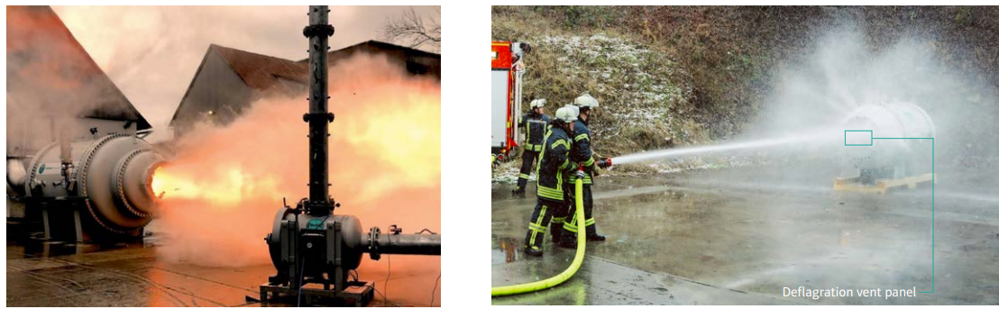
Standards and Regulatory Framework
International Standards
The design, sizing, and installation of deflagration panels for BESS are governed by a robust framework of international standards:
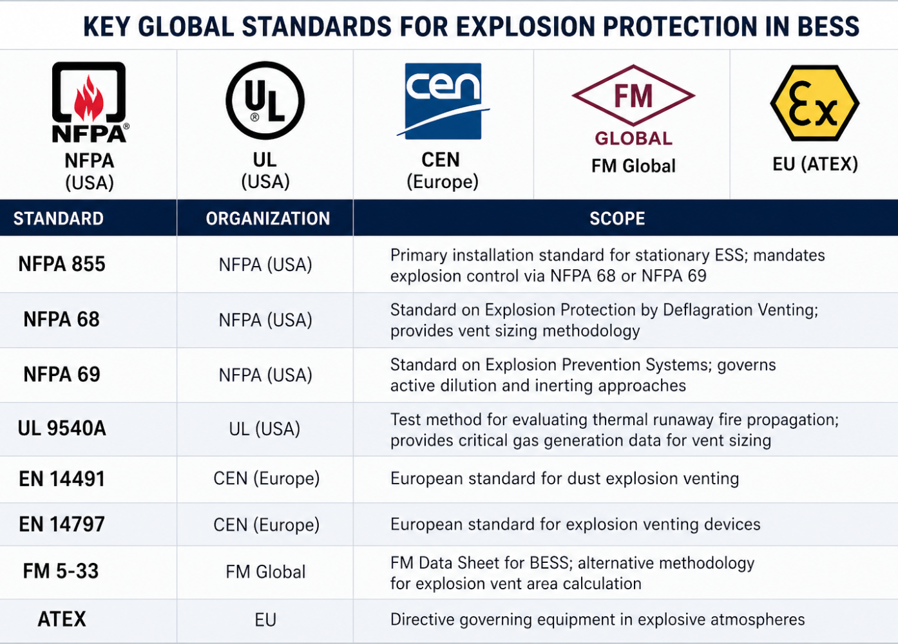
NFPA 855-2023 specifically requires that lithium-ion energy storage stations with capacity greater than 20 kWh must be equipped with explosion protection devices. The 2025 Edition of NFPA 855 introduced Annex G, which provides explicit support for performance-based explosion protection design using CFD simulation and validated modeling approaches.
India: CEA 2026 BESS Safety Regulations
India's regulatory landscape for BESS safety has seen significant evolution. The Central Electricity Authority (CEA) notified the CEA (Measures relating to Safety and Electric Supply) Amendment Regulations, 2026, which introduces a comprehensive safety framework through a new Chapter XA. These regulations will come into force from April 1, 2027, and apply to all BESS installations operating above 650 volts.
Key provisions relevant to explosion control include:
- Mandatory explosion protection mechanisms for all battery containers
- Forced ventilation systems with automated louvers to maintain safe internal gas concentrations
- Hazard detection systems covering smoke, gas, heat, and flame
- Automatic fire suppression systems in every battery container
- HVAC systems with automatic shutdown provisions upon ventilation failure
- Battery containers with ≥200 kWh capacity must have water-based automatic fire suppression
- Independent third-party fire safety audits within three months of commissioning
While the 2026 CEA regulations do not yet explicitly reference NFPA 68 or specific deflagration panel standards, the requirement for "explosion protection mechanisms" and "forced ventilation" clearly encompasses deflagration venting as part of a multi-layered protection strategy. As India's BESS deployment accelerates under the National Energy Storage Mission, alignment with international standards like NFPA 68 is anticipated in subsequent regulatory updates.
Design and Engineering of Deflagration Panels for BESS
Step-by-Step Design Process
Designing an effective deflagration venting system for a BESS container is a structured engineering process that typically follows these stages:
1. Enclosure Characterization Determine the structural properties of the BESS enclosure, specifically the enclosure strength (Pes). For purpose-built BESS containers, this is typically provided by the manufacturer. For modified ISO shipping containers — which were never designed to withstand internal pressure — a dedicated structural analysis is required. Many standard ISO containers lack verified pressure thresholds, making this the most commonly overlooked first step.
2. Gas Generation Data Collection Obtain thermal runaway gas generation data specific to the battery chemistry from the cell or module manufacturer, ideally from UL 9540A testing. Key parameters include the type and quantity of gases released, the maximum release rate, and the fundamental burning velocity (Su) of the gas mixture. Without this data, conservative proxy gases (such as propane per FM 5-33 methodology) must be used.
3. Flammable Gas Volume Estimation Calculate the maximum credible volume of flammable gas that could accumulate in the enclosure under a realistic failure scenario. For PVD analysis, this involves determining the number of cells or modules that could fail simultaneously and the resultant gas release volume as a fraction of the total enclosure free volume.
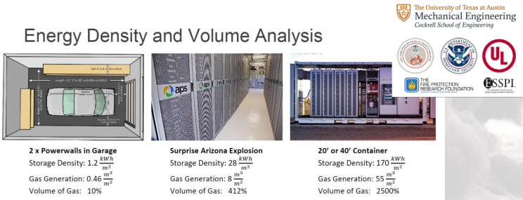
4. Vent Area Calculation Apply NFPA 68 (or EN 14994/FM 5-33) formulas to determine the minimum required vent area (Av). For complex geometries with significant internal congestion, CFD simulation should supplement or replace prescriptive formulas to accurately predict peak explosion pressures.
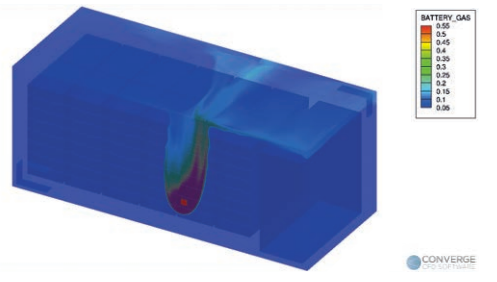
5. Panel Selection and Placement Select panels with appropriate burst pressure (Pstat), size, material, and IP rating. Rooftop installation is the universally preferred placement — directing the fireball, pressure wave, and flame upward into open air minimizes risks to personnel, adjacent containers, and equipment at ground level. CFD studies confirm that top-venting designs significantly reduce both internal container overpressure and external hazard zones compared to side-venting configurations.
6. Integration with Other Safety Systems Design the deflagration panel system in coordination with gas detection, ventilation, fire suppression, and BMS systems. Vent panel activation sensors (burst alert sensors) can be integrated with the site SCADA system to provide immediate notification of panel activation, enabling rapid emergency response.
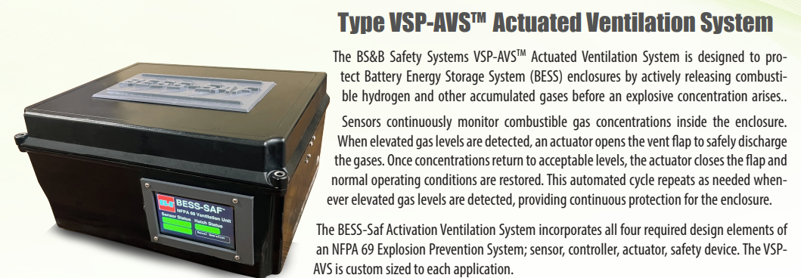
Common Design Pitfalls
Practitioners and code reviewers have identified several recurring mistakes in BESS deflagration panel design:
- Undersized vent area due to use of prescriptive formulas without accounting for internal congestion or realistic gas generation rates
- Incorrect vent placement directing the explosion toward adjacent containers, walkways, or personnel access routes
- Assuming fire suppression agents double as explosion prevention — clean agent systems (Novec 1230, CO₂) are designed for flaming combustion, not gas-phase deflagration prevention
- Using doors as the sole vent panel — doors are structural weak points with unpredictable opening pressures; if they serve as the only pressure relief, improper venting can cause severe overpressure on the opposite wall
- Ignoring enclosure strength — particularly critical for modified shipping containers without verified structural testing
- Lack of empirical validation — designs not supported by UL 9540A test data or CFD simulation often fail during code review or AHJ (Authority Having Jurisdiction) inspections
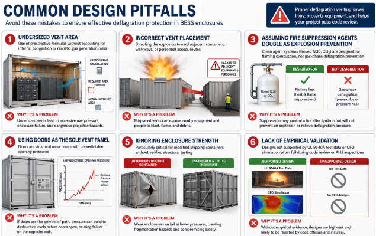
Deflagration Panels Within the Multi-Layer Safety Architecture
Deflagration panels do not operate in isolation — they are the last passive line of defense in a hierarchical, multi-layered BESS safety architecture:
Layer 1 — Battery Management System (BMS): Real-time monitoring of cell voltage, temperature, current, and state of charge to detect incipient failures and initiate protective actions (isolation, alarms) before thermal runaway begins.
Layer 2 — Electrical Isolation and Rapid Shutdown: Automatic disconnection of the affected module or string upon detection of anomalous conditions, preventing further energy input into a failing cell.
Layer 3 — Active Gas Ventilation: Forced ventilation systems (HVAC) flush accumulated combustible gases below the LFL threshold, preventing the formation of a flammable atmosphere. Gas detectors trigger increased ventilation rates upon detecting any gas buildup.
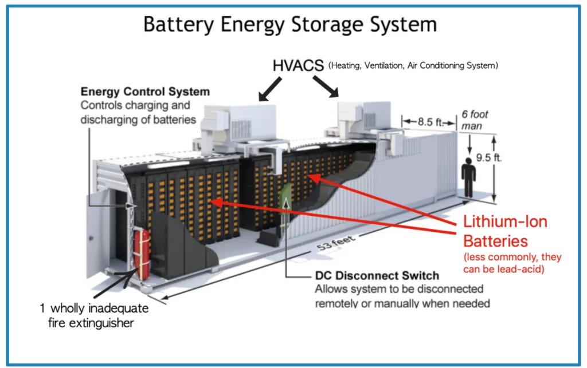
Layer 4 — Fire Detection and Suppression: Early smoke, heat, and off-gas detection systems combined with automatic suppression (clean agent, water mist, or aerosol) address flaming combustion if the previous layers have failed to prevent ignition.
Layer 5 — Deflagration Venting (Deflagration Panels): If all previous layers fail and an ignition of accumulated gas occurs, deflagration panels activate passively to relieve internal explosion pressure, preventing catastrophic structural failure and protecting adjacent equipment and personnel.
The philosophy endorsed by leading BESS safety engineers and insurance underwriters is that both explosion prevention (NFPA 69) and deflagration venting (NFPA 68) should be deployed together, as multiple independent layers of protection are inherently more robust than reliance on any single system.
Real-World Performance: What Testing Shows
Large-scale deflagration testing has generated critical insights into how deflagration panels perform under realistic BESS failure conditions:
- In Fire & Risk Alliance, LLC testing, deflagration panels activated within 200 milliseconds, relieving internal pressure before catastrophic rupture could occur.
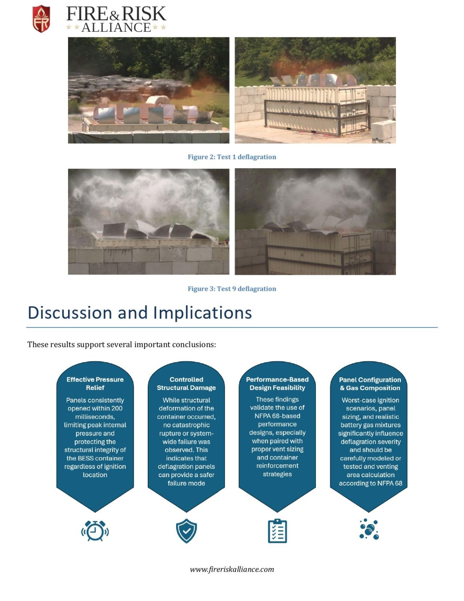
- Controlled structural deformation of the container was observed during tests, but no catastrophic rupture occurred — validating the engineering principle that controlled, predictable failure modes are preferable to sudden, destructive ones.
- UL's large-scale deflagration research (2025) confirmed that vented deflagrations generate hazards in the surrounding area including flaming jets, pressure waves, and projectiles — emphasizing the critical importance of vent orientation toward safe, unoccupied zones.
- CFD studies (OpenFOAM-based simulations) demonstrated that even without top vent panels, simply modifying vent door pressure can still result in severe explosion incidents with unacceptable internal overpressure — confirming that door venting alone is inadequate for BESS protection.
- The University of Waterloo's ongoing research (2026) on deflagration risk in BESS enclosures is focusing on how flame acceleration through battery rack obstructions can greatly enhance the severity of the pressure wave, further supporting the need for PVD and CFD-based design methodologies.
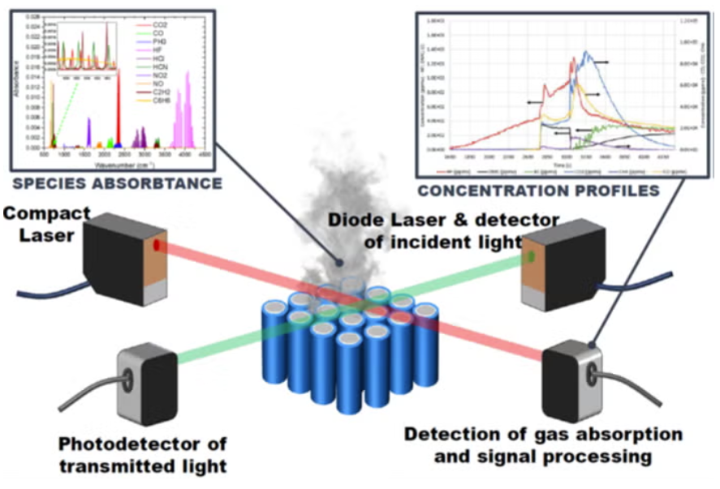
Maintenance, Inspection, and Lifecycle Considerations
Deflagration panels are single-use passive devices: once activated, they must be replaced before the BESS unit can return to service. This is a deliberate design choice — ensuring each panel activation is a clean, reliable event with a precisely defined burst pressure. Key operational considerations include:
- Pre-activation inspection: Panels should be inspected at regular intervals (typically annually or per manufacturer specification) for mechanical damage, corrosion (particularly in coastal or high-humidity environments), deformation from wind or thermal cycling, and seal integrity.
- IP66 rating maintenance: Gasket and seal integrity must be verified to maintain ingress protection — moisture or dust infiltration can corrode panel materials and alter burst pressure characteristics.
- Burst sensor integration: Optional burst alert sensors on each panel provide immediate notification of activation, enabling rapid site response and preventing inadvertent re-energization of a compromised unit.
- Post-activation protocol: Following any panel activation, a full hazard investigation must be conducted before panel replacement and system restart — the root cause of the deflagration event must be identified and addressed.
- Documentation: Maintaining records of panel specifications, installation dates, inspection results, and any activation events is essential for regulatory compliance and insurance requirements.
Conclusion
Deflagration panels are not optional safety accessories for BESS installations — they are engineered life-safety systems that represent the critical last line of passive defense against the most severe and unpredictable hazard in battery energy storage: internal gas-phase explosion. The tragic incidents that have shaped today's safety standards — most notably the APS McMicken event that injured multiple firefighters — occurred in the absence of properly engineered deflagration venting, making the lesson both clear and urgent.